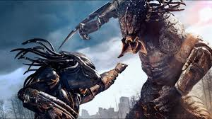
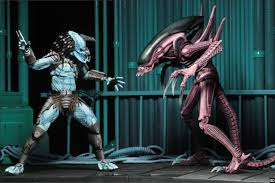

ALIEN VS PREDATOR!
 In deep space, the crew of the commercial starship Nostromo is awakened
from their cryo-sleep capsules halfway through their journey home to
investigate a distress call from an alien vessel. The terror begins
when the crew encounters a nest of eggs inside the alien ship.
An organism from inside an egg leaps out and attaches itself to one of
the crew, causing him to fall into a coma.
In deep space, the crew of the commercial starship Nostromo is awakened
from their cryo-sleep capsules halfway through their journey home to
investigate a distress call from an alien vessel. The terror begins
when the crew encounters a nest of eggs inside the alien ship.
An organism from inside an egg leaps out and attaches itself to one of
the crew, causing him to fall into a coma.
In deep space, the crew of the commercial starship Nostromo is awakened
from their cryo-sleep capsules halfway through their journey home to
investigate a distress call from an alien vessel. The terror begins
when the crew encounters a nest of eggs inside the alien ship.
An organism from inside an egg leaps out and attaches itself to one of
the crew, causing him to fall into a coma.
In deep space, the crew of the commercial starship Nostromo is awakened
from their cryo-sleep capsules halfway through their journey home to
investigate a distress call from an alien vessel. The terror begins
when the crew encounters a nest of eggs inside the alien ship.
An organism from inside an egg leaps out and attaches itself to one of
the crew, causing him to fall into a coma.

A spacecraft flies near Earth and releases an object which enters the
atmosphere. Some time later, in a Central American jungle, U.S. Special
Operations Forces veteran Major Alan “Dutch” Schaefer and his elite
military rescue team — Mac, Billy, Blain, Poncho, and Hawkins — are tasked
by their commander with rescuing an official held hostage by insurgents.
CIA agent Dillon, a former commando and an old friend of Dutch, is assigned
to supervise the team, despite Dutch's objections. The team discovers the
wreckage of a helicopter and three skinned corpses, identified by Dutch as
Green Berets he knew personally at Fort Bragg.

In 2004, a Predator mothership arrives in Earth orbit to draw humans to an
ancient Predator training ground on Bouvetøya, an island about one thousand
miles north of Antarctica. A buried pyramid giving off a "heat bloom"
attracts a group of explorers led by billionaire and self-taught engineer
Charles Bishop Weyland (Lance Henriksen), the original founder and CEO of
Weyland Industries, who unknowingly activates an Alien egg production line
as a hibernating Alien Queen is awakened within the pyramid. Three Predators
descend unto the planet and enters the structure, killing all humans in their
way with the intention of hunting the newly formed Aliens, while the scattered
explorers are captured alive by Aliens and implanted with embryos.